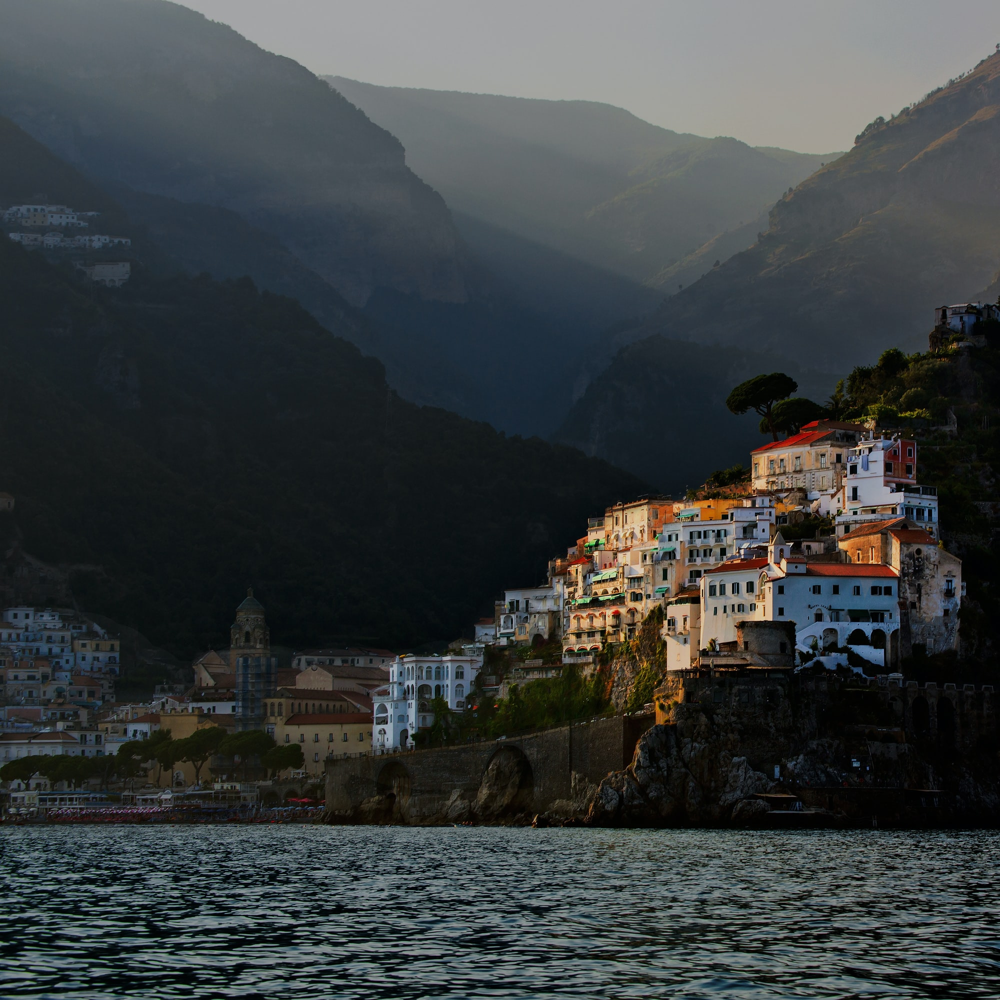
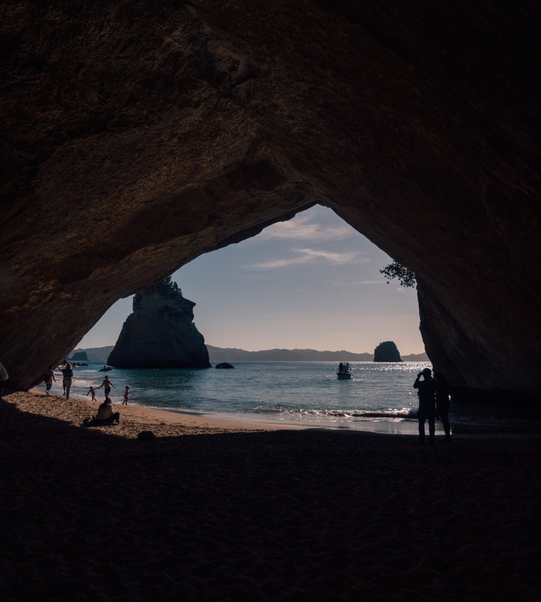
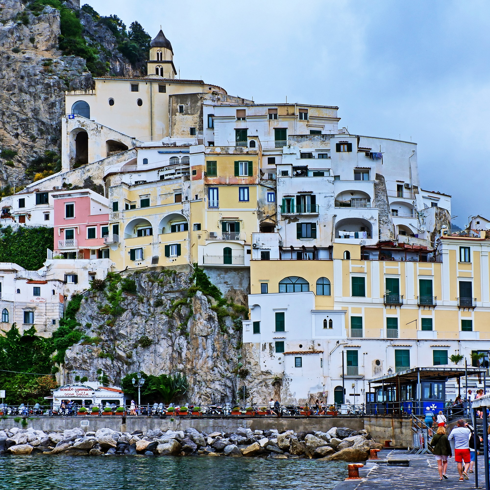
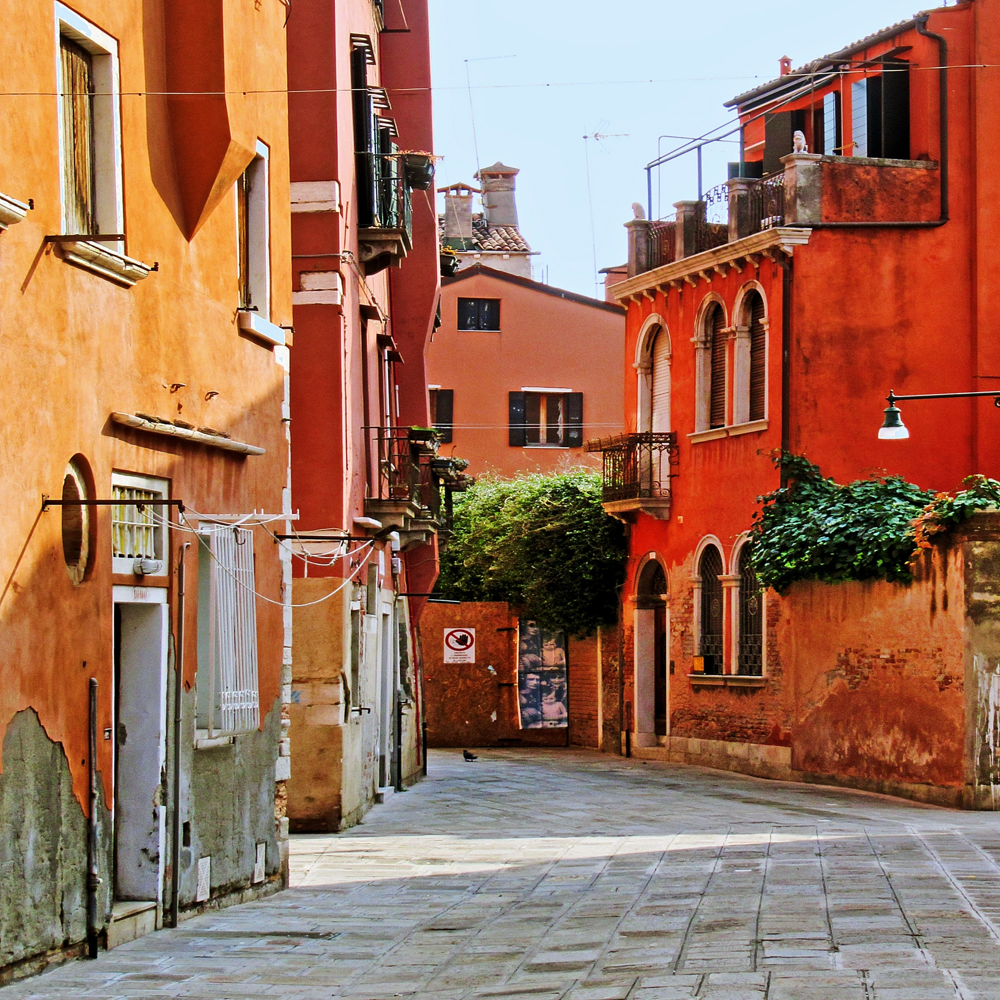
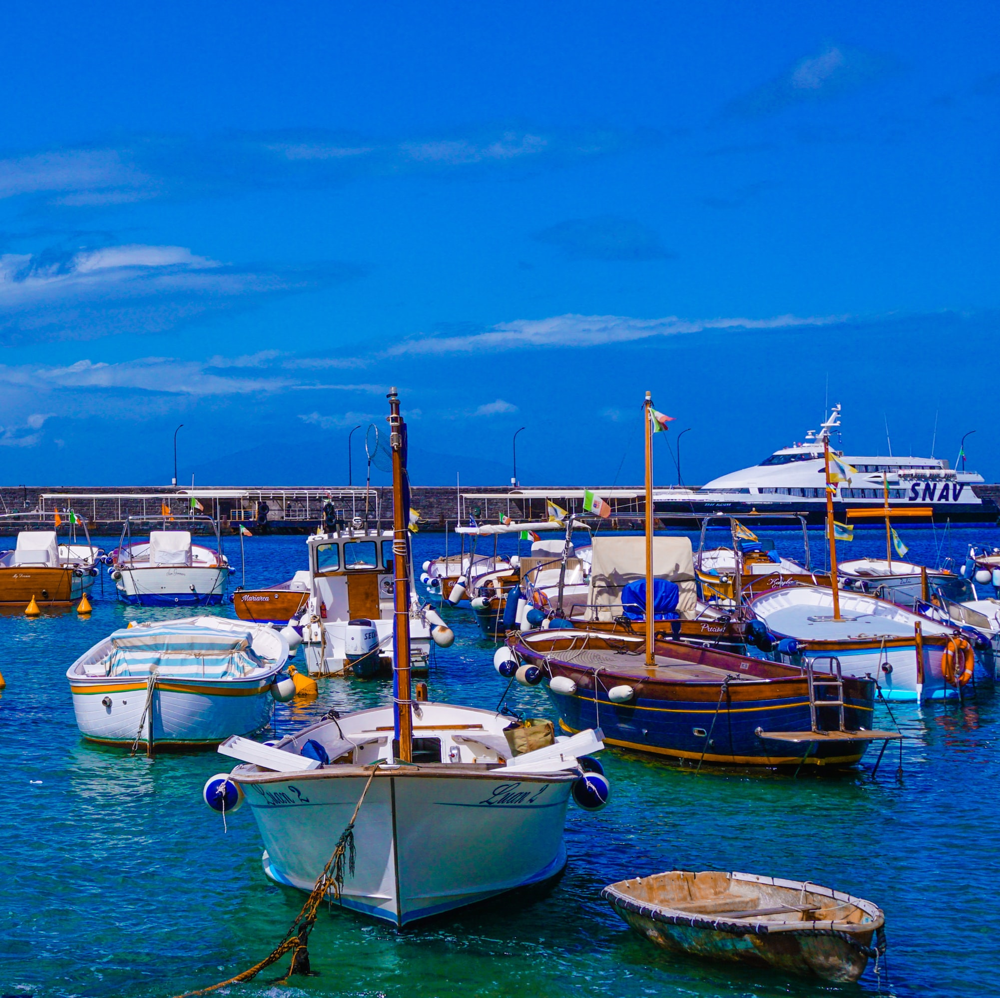

Discover the day-by-day itinerary, created just for you:
Day 01 - Land in Napoli, drive to Nerano and check-in
After an morning flight, get the trip started with a quick drive from Napoli airport to the start-point of your journey in Nerano

Day 02 - Fullday Nerano
Get ready for a relaxing day! We will be walking around town, and hiking to Baia di Ieranto. Then, in the afternoon, we will take a boat tour and do some limoncello tasting!

Day 03 - Amalfi Coast fullday drive including Positano, Vietri sul Mare and Salerno
Drive all the way up to Salerno, with stops along the way in Positano and Vietri sul Mare. Lunch will be midway, in Amalfi. We will end the day with a relaxing dinner in Salerno.

Day 04 - Pompeii Archaeological Park and Museum.
Today, we take the time to see the fabulous Pompeii and learn about the Roman way of life. We will take the full day to see the park and the museum.

Day 05 - Fullday excursion to Napoli
We will drive in the morning to Napoli, then take the entire day to explore the streets, culture and fabulous food.Then, we overnight here and prepare for our flight back home in the morning.
